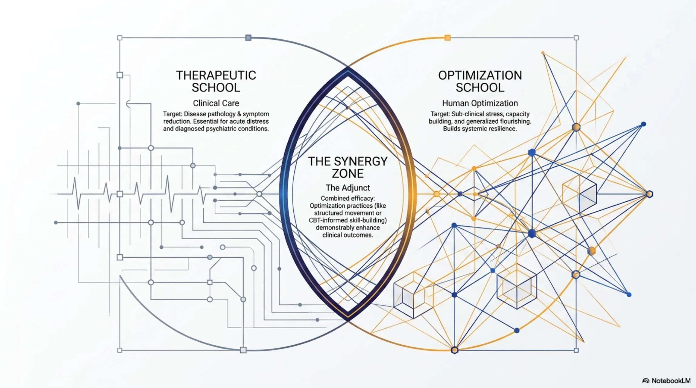
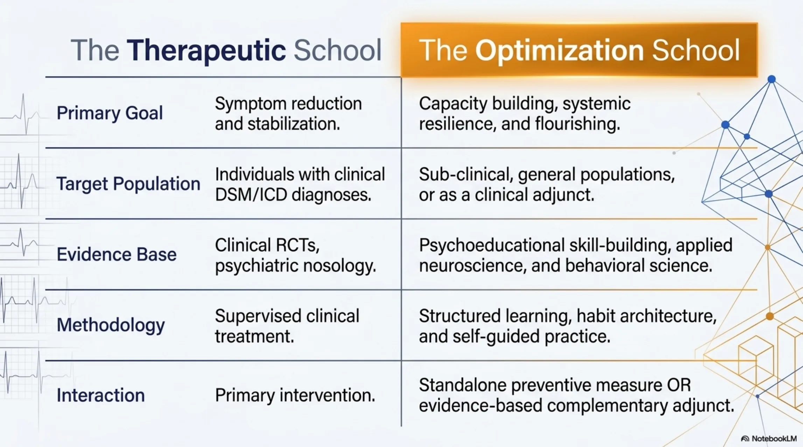
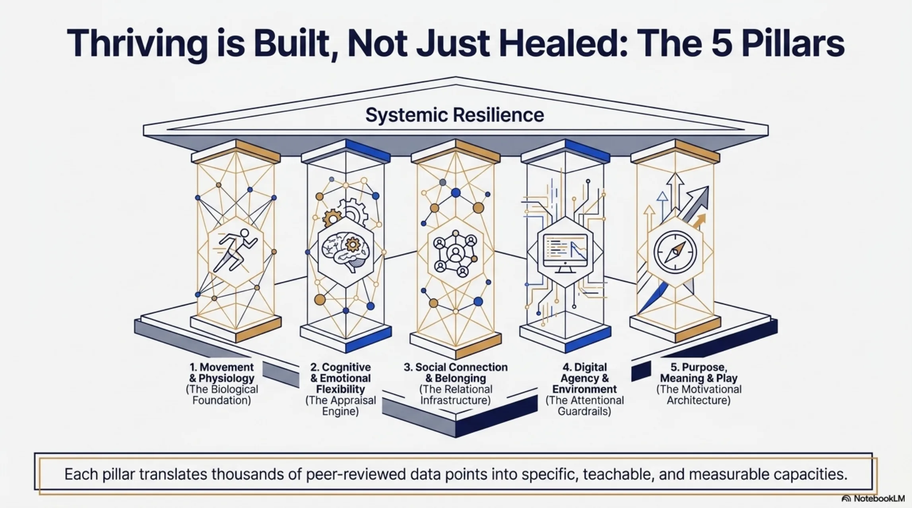
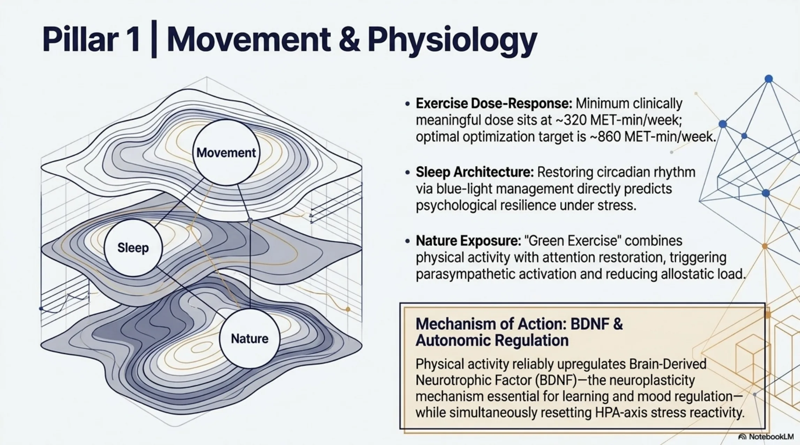
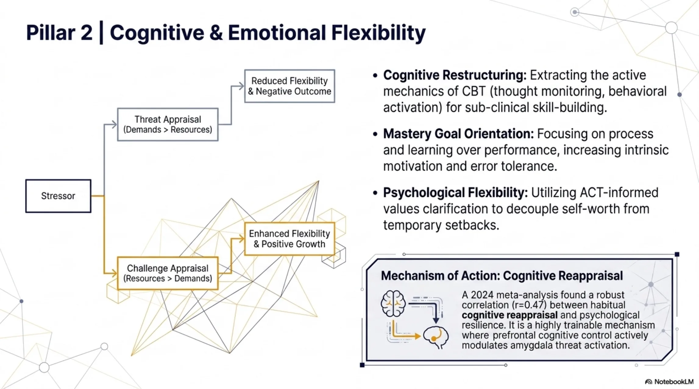
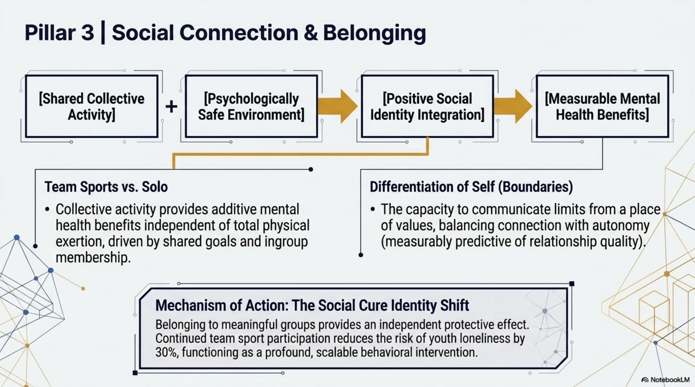
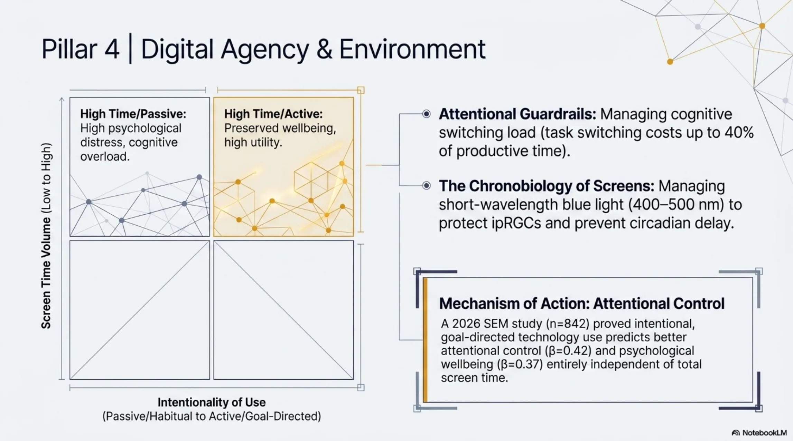
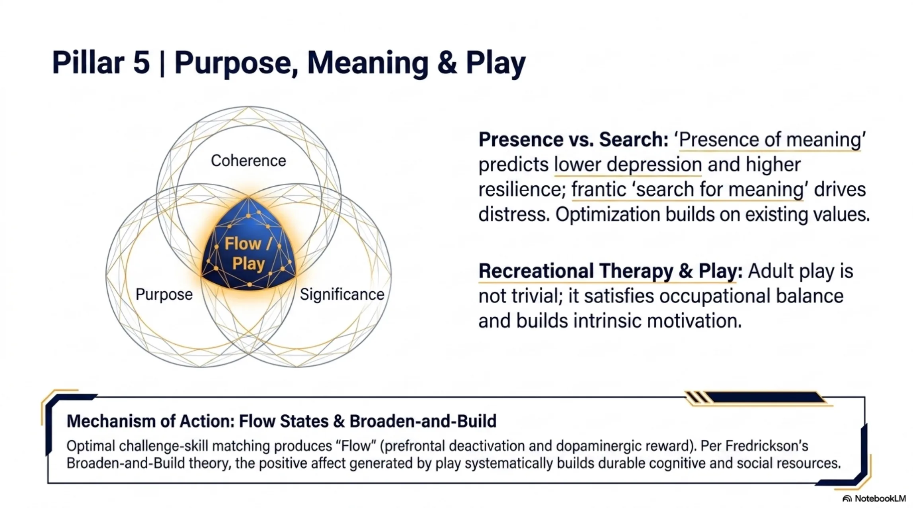
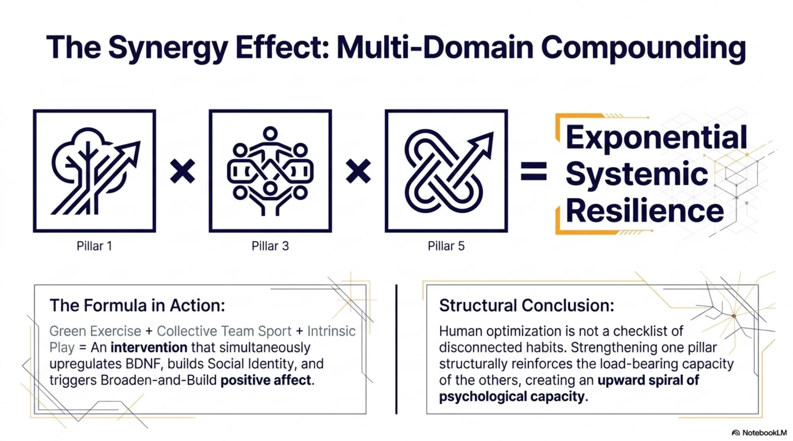
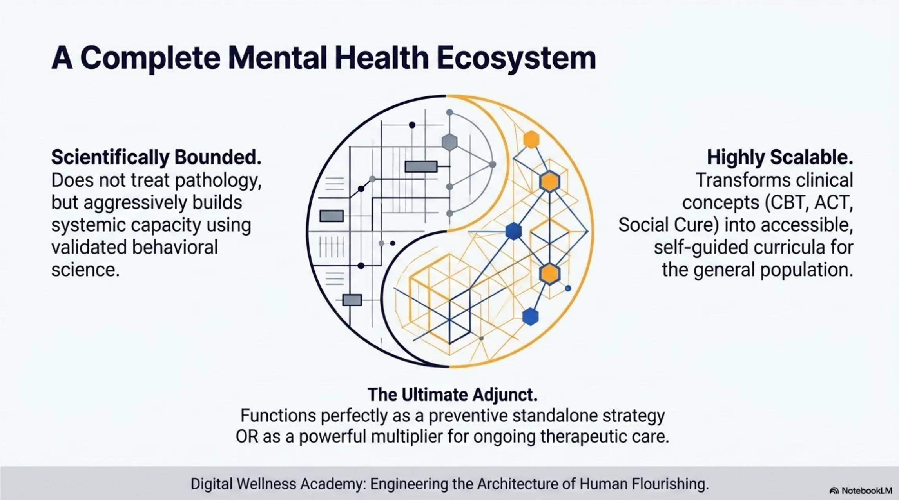

Elevating human potential through evidence-based digital wellness.
Most mental-health platforms treat pathology. This framework builds capacity. Five evidence-based pillars - each with a named neurobehavioral mechanism - that compound across domains to produce systemic resilience and flourishing, not just symptom reduction.

The Therapeutic School targets disease pathology and symptom reduction. It is essential for acute distress and diagnosed psychiatric conditions. The Optimization School targets human flourishing: sub-clinical stress, capacity-building, and generalized resilience. It is essential for the 80% of any population that will never walk through a clinical front door.
Between them is the Synergy Zone: combined interventions where structured movement, CBT-informed skill-building, and other optimization practices demonstrably enhance clinical outcomes. This is the zone most platforms miss entirely.
Digital Wellness Academy is architected to serve both schools and the synergy zone on one HIPAA-compliant platform, with shared identity, isolated progress, and unified provider coordination.
The therapeutic and optimization approaches are not competing paradigms. They are complementary interventions with different goals, different evidence bases, and different populations.

| Therapeutic School | Optimization School | |
|---|---|---|
| Primary Goal | Symptom reduction and stabilization. | Capacity-building, systemic resilience, and flourishing. |
| Target Population | Individuals with clinical DSM/ICD diagnoses. | Sub-clinical, general populations, or as a clinical adjunct. |
| Evidence Base | Clinical RCTs, psychiatric nosology. | Psychoeducational skill-building, applied neuroscience, behavioral science. |
| Methodology | Supervised clinical treatment. | Structured learning, habit architecture, and self-guided practice. |
| Interaction | Primary intervention. | Standalone preventive measure or evidence-based complementary adjunct. |
Each pillar translates thousands of peer-reviewed data points into specific, teachable, measurable capacities. Together they form a load-bearing architecture for systemic resilience.


Physical activity reliably upregulates Brain-Derived Neurotrophic Factor (BDNF) - the neuroplasticity mechanism essential for learning and mood regulation - while simultaneously resetting HPA-axis stress reactivity.

A 2024 meta-analysis found a robust correlation (r≈0.47) between habitual cognitive reappraisal and psychological resilience. This is a highly trainable mechanism where prefrontal cognitive control actively modulates amygdala threat activation.

Belonging to meaningful groups provides an independent protective effect. Continued team-sport participation reduces the risk of youth loneliness by ~30%, functioning as a profound, scalable behavioral intervention.

A 2026 SEM study (n=842) proved intentional, goal-directed technology use predicts better attentional control (β=0.42) and psychological wellbeing (β=0.37) entirely independent of total screen time. Volume is not the variable - intentionality is.

Optimal challenge-skill matching produces flow (prefrontal deactivation and dopaminergic reward). Per Fredrickson's Broaden-and-Build theory, the positive affect generated by play systematically builds durable cognitive and social resources.
Human optimization is not a checklist of disconnected habits. Each pillar structurally reinforces the load-bearing capacity of the others.

Green Exercise + Collective Team Sport + Intrinsic Play is an intervention that simultaneously upregulates BDNF, builds Social Identity, and triggers Broaden-and-Build positive affect. One hour. Three neurobehavioral pathways engaged at once.
Strengthening one pillar structurally reinforces the load-bearing capacity of the others. That is the upward spiral of psychological capacity - and it cannot be replicated by any single-modality intervention.

Does not treat pathology - but aggressively builds systemic capacity using validated behavioral science.
Transforms clinical concepts (CBT, ACT, Social Cure) into accessible, self-guided curricula for the general population.
Functions as a preventive standalone strategy - or as a powerful multiplier for ongoing therapeutic care.
Digital Wellness Academy: Engineering the Architecture of Human Flourishing.